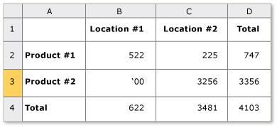

title: Table Control Pattern
description: Describes guidelines and conventions for implementing ITableProvider, including information about properties and methods. The Table control pattern is used to support controls that act as containers for a collection of child elements.
ms.assetid: 81a1a316-cdd6-4490-8de2-1b6db52d84e6
keywords:
- UI Automation,implementing Table control pattern
- UI Automation,Table control pattern
- UI Automation,ITableProvider
- ITableProvider
- implementing UI Automation Table control patterns
- Table control patterns
- control patterns,ITableProvider
- control patterns,implementing UI Automation Table
- control patterns,Table
- interfaces,ITableProvider
ms.topic: article
ms.date: 05/31/2018
Table Control Pattern
Describes guidelines and conventions for implementing ITableProvider, including information about properties and methods. The Table control pattern is used to support controls that act as containers for a collection of child elements.
The children of the container element must implement ITableItemProvider and be organized in a two-dimensional logical coordinate system that can be traversed by row and column. This control pattern is analogous to IGridProvider with the distinction that any control implementing ITableProvider must also expose a column and/or row header relationship for each child element. For examples of controls that implement this control pattern, see Control Types and Their Supported Control Patterns.
This topic contains the following sections.
Implementation Guidelines and Conventions
When implementing the Table control pattern, note the following guidelines and conventions:
-
Access to the content of individual cells is through a two-dimensional logical coordinate system or array provided by the required, concurrent implementation of IGridProvider.
-
A column or row header can be contained within a table object or be a separate header object that is associated with a table object.
-
Column and row headers may include both a primary header as well as any supporting headers.
[!Note]
This concept becomes evident in a Microsoft Excel spreadsheet where a user has defined a First name column. This column now has two headers, including the First name header defined by the user, and the alphanumeric designation for that column assigned by the application.
Â
-
See Grid Control Pattern for related grid functionality.
The following image shows a table with complex column headers.

The following image shows a table with an ambiguous ITableProvider::RowOrColumnMajor property.

Required Members for ITableProvider
The following properties and methods are required for implementing the ITableProvider interface.
Â
This control pattern has no associated events.
Related topics
Conceptual
Control Types and Their Supported Control Patterns
TableItem Control Pattern
UI Automation Control Patterns Overview
UI Automation Tree Overview
Â
Â